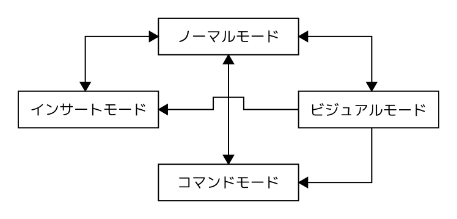

はじめに
ここではUnixの基本操作を説明します。UnixについてはUnixの基本事項を参照してください。
Windows上でUnixを使用するには次のような方法があります。
| WSL(Windows Subsystem for Linux) | Windows標準のLinuxエミュレータ。高速・軽量ですぐに使用できる。 |
| MSYS2 | UnixのツールチェーンでWindowsアプリケーションを開発するためのコンパクトなUnix環境。 |
| VirtualBox/VMware | WindowsやUnix系のOSを動かせるPCエミュレータ。上の方法と比べると若干重い。 |
いちばん手軽な方法はWSLです。デスクトップ環境を使用したいのであればVirtualBox/VMwareを選択します。ここではWSLを使用します。
ディストリビューションのインストール
WSLはWindowsターミナルで使用します。スタートメニューからWindowsターミナルを起動してください。
WSLにインストールできるディストリビューションをリストします。
# wsl -l -oここではarchlinuxをインストールすることにします。
# wsl --install archlinuxディストリビューションを起動するには以下のようにします。ディストリビューションはターミナルのメニューからも起動できます。
# wsl -d archlinuxディストリビューションを削除するには以下のようにします。ディストリビューションをリセットしたいなら削除してから再度インストールします。
# wsl --unregister archlinuxディストリビューションはコマンドwslで管理します。コマンドwslの使い方を確認するには以下のようにします。
# wsl --helpコマンドラインの基本操作
ターミナルのコマンドラインは以下のようなキー操作で編集します。
| Ctrl+j もしくは Ctrl+m もしくは Enter | 入力したコマンドを実行 |
| Ctrl+h もしくは BackSpace | カーソル位置の手前の文字を削除 |
| Ctrl+d もしくは Del | カーソル位置の文字を削除 |
| Ctrl+k | カーソル位置から行末の文字列を削除 |
| Ctrl+u | カーソル位置から行頭の文字列を削除 |
| Ctrl+f もしくは → | カーソルを右に移動 |
| Ctrl+b もしくは ← | カーソルを左に移動 |
| Ctrl+e | カーソルを行末に移動 |
| Ctrl+a | カーソルを行頭に移動 |
| Ctrl+i もしくは Tab | コマンド名・ファイル名・パス名を補完 |
| Ctrl+i+i もしくは Tab Tab | 補完候補を表示 |
| Ctrl+n もしくは ↓ | 実行したコマンドの履歴を順方向に縦覧 |
| Ctrl+p もしくは ↑ | 実行したコマンドの履歴を逆方向に縦覧 |
| Ctrl+s | 実行したコマンドの履歴を順方向に検索 |
| Ctrl+r | 実行したコマンドの履歴を逆方向に検索 |
| Ctrl+g | コマンドの検索を終了 |
| Ctrl+[+. もしくは Alt+. もしくは Esc+. | 直前に実行したコマンドの最後の単語を挿入 |
ターミナルの画面出力を消去するにはCtrl+lを押すか、コマンドclearを入力します。
ディストリビューションの初期設定
スクリプトは実行したいコマンドを記述したテキストファイルです。以下のスクリプトをコメントの指示にしたがって実行してください。このスクリプトを実行すれば初期設定が終了します。インストールするパッケージや設定ファイルの内容は必要に応じて変更してください。
#!/bin/bash
# Arch Linux on WSL の初期設定スクリプト
# これを root で実行してください。
# 使い方:
# 1. # chmod +x init-arch-wsl.sh
# 2. # ./init-arch-wsl.sh | tee init-arch-wsl.log
set -euo pipefail
# === 設定（必要に応じて変更） ===
NEW_USER="user" # ここを作成したいユーザー名に変更
NEW_USER_SHELL="/bin/bash" # /bin/bash または /bin/zsh など
LOCALE="ja_JP.UTF-8"
TIMEZONE="Asia/Tokyo"
MIRROR_COUNTRY="Japan"
AUR_HELPER="yay"
# === root チェック ===
if [ "$(id -u)" -ne 0 ]; then
echo "このスクリプトは root で実行してください。"
exit 1
else
echo "root のパスワードを設定してください:"
passwd root
fi
# === pacman.conf の設定 ===
if ! grep -q '^Color' /etc/pacman.conf; then
sed -i 's/^# *Color/Color/' /etc/pacman.conf
fi
if grep -q '^NoProgressBar' /etc/pacman.conf; then
sed -i 's/^NoProgressBar/#NoProgressBar\nILoveCandy/' /etc/pacman.conf
fi
# === 基本アップデート ===
echo "システムを最新にしています..."
pacman -Syu --noconfirm
echo "システムを最新にしました。"
# === 必須パッケージ ===
echo "必須パッケージをインストールしています..."
pacman -S --needed --noconfirm base-devel git neovim networkmanager iproute2 reflector sudo openssh
echo "必須パッケージをインストールしました。"
# === ユーザー作成 ===
if ! id "${NEW_USER}" >/dev/null 2>&1; then
useradd -m -G wheel -s "${NEW_USER_SHELL}" "${NEW_USER}"
echo "ユーザー ${NEW_USER} を作成しました。パスワードを設定してください:"
passwd "${NEW_USER}"
else
echo "ユーザー ${NEW_USER} は既に存在します。"
fi
# wheel グループの sudo 設定を有効化
if ! grep -q '^%wheel' /etc/sudoers; then
sed -i 's/^# *%wheel/%wheel/' /etc/sudoers
echo "wheel グループの sudo 権限を有効化しました。"
fi
visudo -cf /etc/sudoers
# === ミラー最適化 ===
if pacman -Qi reflector >/dev/null 2>&1; then
echo "ミラーリストを最適化しています..."
reflector --country "${MIRROR_COUNTRY}" --age 12 --protocol https --sort rate --save /etc/pacman.d/mirrorlist --verbose 2>&1
pacman -Syy --noconfirm
echo "ミラーリストを更新しました。"
fi
# === ロケール設定 ===
if ! grep -q "^${LOCALE}" /etc/locale.gen; then
sed -i "s/^# *\(${LOCALE} UTF-8\)/\1/" /etc/locale.gen
echo "ロケール ${LOCALE} を有効化しました。"
fi
locale-gen
echo "LANG=${LOCALE}" > /etc/locale.conf
echo "ロケールを ${LOCALE} に設定しました。"
# === タイムゾーン設定 ===
if [ -f "/usr/share/zoneinfo/${TIMEZONE}" ]; then
cp -a /etc/localtime /etc/localtime.bak 2>/dev/null
ln -sf "/usr/share/zoneinfo/${TIMEZONE}" /etc/localtime
echo "タイムゾーンを ${TIMEZONE} に設定しました。"
else
echo "警告: タイムゾーン '${TIMEZONE}' が存在しません。" >&2
fi
# hwclock は WSL 環境では失敗することがあるが無害
if command -v hwclock >/dev/null 2>&1; then
hwclock --systohc
echo "システムクロックをハードウェアクロックに同期しました。"
fi
# === シェル (zsh) をデフォルトにする場合、ユーザーのシェルを変更 ===
if [ "${NEW_USER_SHELL}" = "/bin/zsh" ]; then
pacman -S --needed --noconfirm zsh
chsh -s /bin/zsh "${NEW_USER}"
echo "ユーザー ${NEW_USER} のデフォルトシェルを zsh に変更しました。"
fi
# === AUR ヘルパー (yay) のインストール ===
if [ "${AUR_HELPER}" = "yay" ]; then
echo "AUR ヘルパー ${AUR_HELPER} をインストールしています..."
su - "${NEW_USER}" -c 'bash -lc "
set -e
cd /tmp
if [ ! -d yay ]; then
git clone https://aur.archlinux.org/yay.git
cd yay
makepkg -si --noconfirm
cd ..
rm -rf yay
fi
"'
echo "AUR ヘルパー ${AUR_HELPER} をインストールしました。"
fi
# === SSH 鍵作成（ユーザーとして） ===
su - "${NEW_USER}" -c 'bash -lc "
if [ ! -f ~/.ssh/id_ed25519 ]; then
mkdir -p ~/.ssh
ssh-keygen -t ed25519 -f ~/.ssh/id_ed25519 -N \"\" -C \"${NEW_USER}@wsl\"
chmod 700 ~/.ssh
chmod 600 ~/.ssh/id_ed25519
echo \"SSH の鍵を作成しました: ~/.ssh/id_ed25519\"
fi
"'
# === パッケージのインストール ===
echo "必要なパッケージをインストールしています..."
pacman -S --needed --noconfirm noto-fonts-cjk man-db man-pages groff tree bat less msedit trash-cli ripgrep fd rsync htop wget lftp neomutt w3m perl-uri feh viu mupdf mpv unzip nodejs python
su - "${NEW_USER}" -c 'bash -lc "
yay -S --needed --noconfirm man-pages-ja
"'
echo "必要なパッケージをインストールしました。"
# === マニュアルデータベースの更新 ===
echo "マニュアルデータベースを更新しています..."
mandb
echo "マニュアルデータベースを更新しました。"
# === ユーザーの設定ファイルを配置 ===
cat <<'EOF' >> ~/.bashrc
if [ -f ~/.settings ]; then
source ~/.settings
fi
if [ -f ~/.aliases ]; then
source ~/.aliases
fi
if [ -f ~/.functions ]; then
source ~/.functions
fi
EOF
cat <<'EOF' > ~/.settings
export EDITOR='nvim'
export LANG='ja_JP.UTF-8'
export PAGER='bat'
export MANPAGER='less -R'
# 履歴設定
export HISTFILE=~/.bash_history
export HISTSIZE=500 # セッション中に保持する件数
export HISTFILESIZE=2000 # ファイルに保存する最大件数
export HISTCONTROL=ignoredups:erasedups # 重複するコマンドを履歴から削除
export HISTTIMEFORMAT='%F %T ' # 例: 2026-03-13 12:34:56
EOF
cat <<'EOF' > ~/.aliases
alias a='alias'
alias c='clear'
alias e='nvim'
alias feh='feh --geometry 800x600 --image-bg 000000 --scale-down'
alias h='cd ~'
alias hi='history'
alias j='bat'
# 再ログイン
alias relogin='exec $SHELL --login'
alias re='relogin'
# ファイル・ディレクトリ表示
alias ls='ls -FH --color=auto --group-directories-first'
alias la='ls -A'
alias ll='ls -Alh --time-style=long-iso'
alias l='clear && ll'
# ファイル・ディレクトリ操作
alias -- -='cd -'
alias ..='cd ..'
alias ...='cd ../..'
alias ....='cd ../../..'
alias cp='cp -piv'
alias mv='mv -iv'
alias rm='trash -v' # ゴミ箱に移動
alias tl='trash-list' # ゴミ箱の内容を表示
alias tr='trash-restore' # ゴミ箱から復元
# alias rm='rm -iv'
# alias rmrf='rm -rf' # 注意して使用
alias mkdir='mkdir -v'
alias mkdirp='mkdir -p' # 親ディレクトリも作成
# alias rmdir='rmdir -v'
alias rename='rename -iv'
alias chmod='chmod -v'
alias chown='chown -v'
# 検索
alias g='grep --color=auto'
alias eg='grep -E'
alias fg='grep -F'
# 差分表示
alias diff='git diff --no-index --'
# プロセス管理
alias top='htop'
# yay
alias yy='yay'
alias yyu='yay -Syu' # システム全体を更新
alias yyU='yay -Syyu' # パッケージデータベースを強制更新してシステム全体を更新
alias yyi='yay -S' # パッケージインストール
alias yys='yay -Ss' # パッケージ検索
alias yyv='yay -Si' # パッケージ情報表示
alias yyV='yay -Sii' # パッケージ情報表示(詳細)
alias yyq='yay -Qs' # インストール済みパッケージから検索
alias yyl='yay -Qi' # インストール済みパッケージの情報表示
alias yyL='yay -Qe' # 明示的にインストールされたパッケージのリスト表示
alias yylf='yay -Ql' # パッケージのファイルリスト表示
alias yylo='yay -Qdt' # 孤立したパッケージのリスト表示
alias yyro='yylo && yay -Rns $(yay -Qtdq)' # 孤立したパッケージの削除
alias yyr='yay -Rns' # パッケージ削除と不要依存の削除
alias yyc='yay -Scc' # 全キャッシュ削除
EOF
cat <<'EOF' > ~/.functions
# w3m-search: w3mで各種検索エンジンを開く関数
# 使い方:
# w3m-search "検索語" # DuckDuckGo を使う
# w3m-search "検索語" w # Wikipedia を使う
# w3m-search "検索語" l # ロングマン英和辞典を使う
# w3m-search "検索語" k # コトバンクを使う
# w3m-search "検索語" e # e-Words を使う
#
# 例: w3m-search "artificial intelligence" w
#
w3m-search() {
local query engine url enc_q
if [ $# -lt 1 ]; then
echo "使い方: w3m-search \"検索語\" [w|l|k|e]" >&2
return 2
fi
query="$1"
engine="${2:-ddg}"
# URLエンコード(簡易。UTF-8環境前提)
enc_q=$(printf '%s' "$query" | perl -MURI::Escape -ne 'chomp; print uri_escape($_), "\n"')
case "$engine" in
ddg|duckduckgo)
# DuckDuckGo
url="https://duckduckgo.com/?q=${enc_q}"
;;
w|wiki|wikipedia)
# Wikipedia(言語は自動検出せず日本語優先)
if printf '%s' "$query" | grep -qP '[\x{3040}-\x{30FF}\x{4E00}-\x{9FFF}]'; then
url="https://ja.wikipedia.org/wiki/${enc_q}"
else
url="https://en.wikipedia.org/wiki/${enc_q}"
fi
;;
l|longman)
# ロングマン英和辞典
url="https://www.ldoceonline.com/jp/dictionary/english-japanese/${enc_q}"
;;
k|kotobank)
# コトバンク
url="https://kotobank.jp/word/${enc_q}"
;;
e|ewords)
# e-Words
url="https://e-words.jp/w/${enc_q}.html"
;;
*)
echo "不明なエンジンです: ${engine}" >&2
echo "サポートされているのは: ddg, wiki, longman, kotobank, ewords" >&2
return 3
;;
esac
# w3mを起動(-I utf-8 -O utf-8 は必要に応じて)
w3m -I utf-8 -O utf-8 "$url"
}
EOF
mkdir -vp ~/.config/nvim/vimrc.d
cat <<'EOF' > ~/.config/nvim/init.vim
" ディレクトリを指定（必要なら変更）
" let s:confdir = expand('~/.vim/vimrc.d')
let s:confdir = expand('~/.config/nvim/vimrc.d')
" 存在するファイルを順に読み込む
if isdirectory(s:confdir)
for fname in split(globpath(s:confdir, '*.vim'), '\n')
execute 'source' fname
endfor
endif
EOF
cat <<'EOF' > ~/.config/nvim/vimrc.d/00-settings.vim
syntax enable " シンタックスハイライト
filetype indent on " ファイルタイプごとのインデント
filetype plugin on " ファイルタイプごとのプラグイン
" 基本動作
set autochdir " カレントディレクトリを自動的に移動
set backspace=indent,eol,start " バックスペースの動作を拡張
set clipboard=unnamedplus " システムクリップボード共有（必要なら）
set hidden " バッファを閉じずに切り替え可能
set mouse=a " マウスを有効化
set nocompatible " Vi互換モード無効
" インターフェイス
set background=dark " ダークテーマ（好みで）
set cmdheight=2 " コマンドラインの高さ
set laststatus=2 " 常にステータスライン表示
set number " 行番号
" set relativenumber " 相対行番号（好みで）
" set ruler " ルーラー表示（行番号の右にカーソル位置などを表示）
set shiftround " インデントをタブ幅の倍数に丸める
set showcmd " コマンド入力を表示
set showmode " モード表示（インサート、ビジュアルなど）
set signcolumn=yes " 常にシグナルカラムを表示（エラーなどのアイコン用）
set termguicolors " カラースキームを有効に（端末対応なら）
set wildmenu " コマンドライン補完をメニュー表示
" 編集
set autoindent " 自動インデント
" set cursorcolumn " カーソル列をハイライト
set cursorline " カーソル行をハイライト
set expandtab " タブをスペースに変換
set nowrap " 自動改行を無効（好みで）
set scrolloff=999 " カーソル位置を常に画面中央に表示
set shiftwidth=4 " インデントの幅
set showmatch " 対応する括弧を強調
set smartindent " スマートインデント
set softtabstop=4 " タブキーのスペース数
set tabstop=4 " タブの幅
" set textwidth=78 " テキストの幅（自動改行の位置）
" set wrap " 行の折り返し（好みで）
" 検索
set hlsearch " 検索結果ハイライト
set incsearch " インクリメンタル検索
set ignorecase " 大文字小文字を区別しない検索
set smartcase " 大文字を含む検索語は大文字小文字を区別
" ファイル管理
set backup " バックアップファイルを作成
set backupdir=~/.vim/backup " バックアップファイルの保存場所
set swapfile " スワップファイルを作成
set directory=~/.vim/swap " スワップファイルの保存場所
set undofile " アンドゥファイルを作成
set undodir=~/.vim/undo " アンドゥファイルの保存場所
set writebackup " 上書き保存前にバックアップファイルを作成
" パフォーマンス
set updatetime=300 " CursorHoldイベントの発火時間を短縮
set lazyredraw " 画面更新を最小限にして高速化
EOF
cat <<'EOF' > ~/.config/nvim/vimrc.d/10-mappings.vim
" インサートモードでjjを押すとノーマルモードに戻る
inoremap jj <ESC>
" リーダーキー
let mapleader=","
" 行移動の改善
nnoremap <leader>e :NERDTreeToggle<CR>
nnoremap <C-p> :Files<CR> " fzf
nnoremap <leader>gs :Gstatus<CR>
" バッファ移動（Ctrl+Tab / Ctrl+Shift+Tab）
noremap <C-Tab> :bn<CR>
noremap <C-S-Tab> :bp<CR>
" ウィンドウ移動（Ctrl+h/j/k/l）
nnoremap <C-h> <C-w>h
nnoremap <C-j> <C-w>j
nnoremap <C-k> <C-w>k
nnoremap <C-l> <C-w>l
EOF
cat <<'EOF' > ~/.config/nvim/vimrc.d/20-plugins.vim
" vim-plug のヘッダ
call plug#begin('~/.vim/plugged')
Plug 'vim-jp/nvimdoc-ja'
Plug 'tpope/vim-sensible'
Plug 'junegunn/fzf', { 'do': { -> fzf#install() } }
Plug 'junegunn/fzf.vim'
Plug 'preservim/nerdtree' " ファイルツリー（好みで）
Plug 'tpope/vim-fugitive' " Git統合
Plug 'neoclide/coc.nvim', {'branch': 'release'} " LSP/補完（代替: nvim-lspconfig + nvim-cmp）
Plug 'jiangmiao/auto-pairs' " 括弧自動補完
Plug 'itchyny/lightline.vim' " ステータスライン
call plug#end()
EOF
mkdir -vp ~/.config/mpv
/bin/bash -c "$(curl -fsSL https://raw.githubusercontent.com/tomasklaen/uosc/HEAD/installers/unix.sh)"
cat <<'EOF' > ~/.config/mpv/mpv.conf
geometry=800x600
border=no
snap-window=yes
volume-max=200
af=loudnorm=I=-24.0,acompressor,superequalizer=1b=0.5:3b=0.5:5b=0.4:7b=0.6:9b=0.9:11b=1.0:13b=0.7:15b=0.5:17b=0.4
hwdec=auto
ytdl-format=best[height<=720]
#ytdl-format=best[height<=480]
osc=no
osd-bar=no
osd-font=Noto Sans CJK JP
sub-font=Noto Sans CJK JP
EOF
mv -vt /home/"${NEW_USER}"/ /root/{.bashrc,.settings,.aliases,.functions}
chown -v "${NEW_USER}:${NEW_USER}" /home/"${NEW_USER}"/{.bashrc,.settings,.aliases,.functions}
rsync -a --progress ~/.config/ /home/"${NEW_USER}"/.config/
rm -vrf ~/.config
chown -vR "${NEW_USER}:${NEW_USER}" /home/"${NEW_USER}"/.config
echo "ユーザーの設定ファイルを配置しました。"
echo "Neovim のプラグインをインストールしています..."
su - "${NEW_USER}" -c 'bash -lc "
curl -fLo ~/.local/share/nvim/site/autoload/plug.vim --create-dirs \
https://raw.githubusercontent.com/junegunn/vim-plug/master/plug.vim
nvim +PlugInstall +qall
nvim -c \"helptags ALL\" -c qa
"'
echo "Neovim のプラグインをインストールしました。"
# === 最低限のチェック出力 ===
echo "===== 設定完了 ====="
echo "ユーザー: ${NEW_USER}"
echo "ロケール: ${LOCALE}"
echo "タイムゾーン: ${TIMEZONE}"
echo "AUR ヘルパー: ${AUR_HELPER}"
echo "必要なら WSL を再起動してください。"上記のスクリプトでは以下のようなパッケージをインストールしています。
- フォント: noto-fonts-cjk
- プロセスビューア: htop
- ページャ: bat/less
- テキストエディタ: msedit/neovim
- テキスト検索: ripgrep
- ファイル検索: fd
- ゴミ箱機能: trash-cli
- ディレクトリのツリー表示: tree
- ディレクトリの同期: rsync
- ダウンロードマネージャ: wget
- メールクライアント: neomutt
- テキストブラウザ: w3m
- イメージビューア: feh/viu
- PDFビューア: mupdf
- メディアプレーヤ: mpv(スキンとしてuosc)
パッケージマネージャ(pacman/yay)
パッケージの管理にはpacmanを使用します。
ヘルプを表示
# pacman -hオペレーション-Sのオプションを表示
# pacman -S -hインストール済みのパッケージをアップデート
# pacman -Syuパッケージfooをインストール
# pacman -S fooインストール済みのパッケージを表示
# pacman -Qe名前にfooを含むパッケージを検索(正規表現も使用可)
# pacman -Ss foo
# pacman -Sl | grep fooパッケージfooの詳細を確認
# pacman -Si fooパッケージグループのリストを表示
# pacman -Sgパッケージグループfooに含まれているパッケージを表示
# pacman -Sgg fooパッケージfooをアンインストール
# pacman -Rs foo未使用のキャッシュを削除
# pacman -Scpacmanの代わりにyayを使用すればAUR(Arch User Repository)にもアクセスできます。AURには公式にはない多くのパッケージが収録されています。エイリアス(コマンドの別名)を~/.aliasesに設定しているので参照してください。yayの使い方はpacmanと同じですが、管理者権限は不要です。
$ cat ~/.aliases | grep yayシェル(bash)
入力したコマンドはシェルが実行します。デフォルトのシェルはbashです。詳細についてはとほほのBash入門/bash入門/UNIXの部屋などを参照してください。
シェルの基本的なコマンドを以下に示します。
| cat | 連結したファイルの内容を表示 |
| cd | カレントディレクトリを変更 |
| chmod | ファイルのパーミッションを変更 |
| chown | ファイルの所有者・所有グループを変更 |
| cp | ファイルをコピー |
| echo | 引数の文字列を表示 |
| find | ファイルを検索 |
| grep | パターンにマッチする行を検索 |
| less | テキストファイルを閲覧 |
| ls | ディレクトリの内容を表示 |
| man | コマンドのマニュアルを表示 |
| mkdir | 新しいディレクトリを作成 |
| mv | ファイルを移動・リネーム |
| pwd | カレントディレクトリのパスを表示 |
| rm | ファイルを削除 |
| tar | アーカイブファイルを処理 |
| xargs | 標準入力をコマンドの引数に指定 |
実行中のコマンドを強制的に停止するにはCtrl+cを押します。
コマンドのオプションは-(ハイフン)で指定します。-(ハイフン)が単独で使用された場合は標準入出力として扱われます。--はコマンドオプションの終わりを指示します。スペース・タブ・改行はデリミタ(区切り文字)として機能します。コマンドラインやシェルスクリプトでこれらの空白文字を不用意に入力しないでください。エラーを引き起こす原因になります。
シェルには以下のメタキャラクタ(特殊文字)が存在しこれらの文字はシェルの中で特別な意味を持ちます。
*?~#\$"'`!;|<>&()[]{}メタキャラクタを普通の文字として扱いたい場合は\(バックスラッシュ)でエスケープします。’(シングルクォート)で文字列を括れば文字列内のメタキャラクタをすべてエスケープできます。’(シングルクォート)ではなく"(ダブルクォート)を使用するとメタキャラクタがシェルに解釈されます。
ワイルドカードを使用すればパターンにマッチする複数のファイルを一括で処理できます。詳細については用語集:ファイルグロブ: UNIXの部屋を参照してください。
パイプラインやリダイレクトを使用すればコマンドをつなげて実行したりコマンドの入出力先を変更したりできます。詳細については用語集:リダイレクト: UNIXの部屋や入力と出力 | UNIXコマンド・シェルスクリプトリファレンスを参照してください。
リダイレクトについてかみ砕いて説明します。知っておくべきことは次のとおり。
- ディスクリプタは入出力先に割り当てられた番号
- 標準入力(キーボード)のディスクリプタは0
- 標準出力(ディスプレイ)のディスクリプタは1
- 標準エラー出力(ディスプレイ)のディスクリプタは2
ディスクリプタn, ディスクリプタmおよびファイルfoo.txtに対して以下のように記述します。
| n<foo.txt | コマンドの入力nにファイルfoo.txtをセットする(n=0ならnを省略可) |
| n<&m | コマンドの入力nにmをセットする(n=0ならnを省略可) |
| n>foo.txt | コマンドの出力nにファイルfoo.txtをセットする(n=1ならnを省略可) |
| n>&m | コマンドの出力nにmをセットする(n=1ならnを省略可) |
| &>foo.txt もしくは >&foo.txt | 標準出力・標準エラー出力をまとめてファイルfoo.txtに出力する |
テキストエディタ(msedit/neovim)
mseditはターミナルで使用できるテキストエディタです。 mseditでテキストファイルを開くにはコマンドmseditにテキストファイルのパスを指定します。
$ msedit ~/foo.txt後述するvimの操作に慣れるまではmseditを使用するといいでしょう。
vimはターミナルで使用できるテキストエディタです。neovimはvimを再設計したものです。詳細についてはまくまくVimノートや名無しのvim使いを参照してください。
neovimの設定は~/.config/nvim/init.vimに記述します。ここでは設定を管理しやすくするために~/.config/nvim/init.vimを分割して、~/.config/nvim/vimrc.d/00-settings.vimに基本設定、~/.config/nvim/vimrc.d/10-mappings.vimにキーマッピング、~/.config/nvim/vimrc.d/20-plugins.vimにプラグインを記述しています。(各設定ファイルを~/.config/nvim/init.vimでロードするようにしています)
neovimでテキストファイルを開くにはコマンドnvimにテキストファイルのパスを指定します。オプション-Rを指定すると読み出しモードで開くことができます。
$ nvim ~/foo.txt
$ nvim -R ~/foo.txtvimには[ノーマル/インサート/ビジュアル/コマンド]の4つのモードがあります。編集コマンドを受け付けるノーマルモードで起動し、ノーマルモードを軸に他の3つのモードに遷移します。文字を入力するときはインサートモードに移行します。範囲を選択するときはビジュアルモードに移行します。検索や置換などのコマンドを実行するときはコマンドモードに移行します。ノーマルモードまたはビジュアルモードで:(コロン)を入力するとコマンドモードに移行し、下のコマンドラインから:に続けて任意のコマンドを入力できます。ノーマルモードに戻るにはEsc(Ctrl+[)もしくはCtrl+cを入力します。

vimの基本的なコマンドを以下に示します。詳細についてはVS Codeで始めるVimを参照してください。
| [ノーマルモード] | |
| カーソルを下に移動 | j もしくは Ctrl+n |
| カーソルを上に移動 | k もしくは Ctrl+p |
| カーソルを右に移動 | l もしくは Space |
| カーソルを左に移動 | h もしくは BackSpace |
| カーソルを次の単語に移動 | w もしくは W (記号を無視) |
| カーソルを次の単語の末尾に移動 | e もしくは E (記号を無視) |
| カーソルを前の単語に移動 | b もしくは B (記号を無視) |
| カーソルを前の単語の末尾に移動 | ge もしくは gE (記号を無視) |
| カーソルを右方向・左方向の最初のjに移動(前後に再検索) | fj ↔ Fj (; ↔ ,) |
| カーソルを右方向・左方向の最初のjの手前に移動(前後に再検索) | tj ↔ Tj (; ↔ ,) |
| カーソルを行末に移動 | $ |
| カーソルを行頭に移動 | 0 もしくは ^ (行頭の空白文字を無視) |
| カーソルを128行目に移動 | 128G |
| カーソルを最後の行に移動 | G |
| カーソルを最初の行に移動 | gg |
| 画面を下にスクロール | Ctrl+f もしくは Ctrl+d (半画面) |
| 画面を上にスクロール | Ctrl+b もしくは Ctrl+u (半画面) |
| カーソル位置の文字を削除 | x |
| カーソル位置の手前の文字を削除 | X |
| カーソル位置の単語をカット | diw |
| カーソル位置の単語をコピー | yiw |
| カーソル位置から右側を削除 | D |
| カーソル位置の行をカット | dd |
| カーソル位置の行をコピー | yy |
| カーソル位置(行ならカーソル位置の下)にペースト | p |
| カーソル位置の手前(行ならカーソル位置の上)にペースト | P |
| レジスタ"3の内容をペースト | "3p |
| 行を連結 | gJ もしくは J (間にスペースを1文字挿入) |
| アンドゥ | u もしくは U (行全体) |
| リドゥ | Ctrl+r |
| 直前の操作の繰り返し | . |
| カーソル位置の数字をインクリメント・デクリメント | Ctrl+a ↔ Ctrl+x |
| 対応する括弧を検索 | % |
| カーソル位置の単語を後方(前方)検索 | * ↔ # |
| カーソル位置の文字(文字列)を置換 | r ↔ R |
| [ノーマルモード] → [インサートモード] | |
| カーソル位置・カーソル位置の後ろから入力開始 | i ↔ a |
| カーソル位置の行頭・行末から入力開始 | I ↔ A |
| カーソル位置の下・上に挿入した空行から入力開始 | o ↔ O |
| カーソル位置の文字・行を削除して入力開始 | s ↔ S |
| カーソル位置の単語を削除して入力開始 | ciw |
| カーソル位置の" "の中身を削除して入力開始 | ci" |
| カーソル位置から右側を削除して入力開始 | C |
| [ノーマルモード] → [ビジュアルモード] | |
| カーソル位置から選択 | v |
| カーソル位置から行選択 | V |
| カーソル位置から矩形選択 | Ctrl+v |
| 直前の選択範囲を選択 | gv |
| [ノーマルモード] → [コマンドモード] | |
| ヘルプを表示 | :h |
| 変更を保存して終了 | :x もしくは :wq もしくは ZZ |
| 変更を保存せずに終了 | :q! もしくは ZQ |
| レジスタの内容を表示 | :di もしくは :reg |
| 順方向・逆方向に文字列fooを検索(前後に再検索) | /foo ↔ ?foo (n ↔ N) |
| 検索文字列のハイライトを解除 | :noh |
| ファイル全体の文字列fooを文字列barに置換 | :%s/foo/bar/g |
| ファイル全体の文字列fooを文字列barに確認しながら置換 | :%s/foo/bar/gc |
| ファイルfoo.txtをバッファに追加 | :e foo.txt |
| バッファのファイルをリスト | :ls |
| バッファのファイルfoo.txtに切り替え(バッファの番号も指定可) | :b foo.txt |
| バッファのファイルをすべて終了 | :qa |
| カーソル位置にファイルfoo.txtを挿入 | :r foo.txt |
| [インサートモード] | |
| カーソル位置の上・下の行の文字をコピーして入力 | Ctrl+y ↔ Ctrl+e |
| カーソル位置の行をインデント・逆インデント | Ctrl+t ↔ Ctrl+d |
| 単語を順方向・逆方向に検索して補完 | Ctrl+n ↔ Ctrl+p |
| レジスタ"3の内容をペースト | Ctrl+r3 |
| [ビジュアルモード] | |
| 選択範囲をカット | d |
| 選択範囲をコピー | y |
| 選択範囲の大文字・小文字を反転 | ~ |
| 選択範囲を大文字・小文字に変換 | U ↔ u |
| 選択行をインデント・逆インデント | » ↔ « |
| [ビジュアルモード] → [インサートモード] | |
| 選択範囲をカットして入力開始 | c |
| [ビジュアルモード] → [コマンドモード] | |
| 選択範囲の文字列fooを文字列barに置換 | :’<,’>s/foo/bar/g |
| 選択範囲の文字列fooを文字列barに確認しながら置換 | :’<,’>s/foo/bar/gc |
| 選択範囲を昇順にソート | :’<,’>sort |
| 選択範囲を降順にソート | :’<,’>sort! |
読み込んだファイルはバッファに保存され、バッファを切り替えることによって複数のファイルを同時に編集できます。ショートカットを利用するとコマンドラインで文字列を素早く入力できます。
置換対象の文字列を省略すると最後に検索した文字列が置換対象になります。大文字・小文字を区別しない場合は検索パターンに\cを指定します。正規表現を使用する場合は検索パターンに\vを指定します。
1から10の連番を入力するにはノーマルモードから [i] > [0] > [Enter] > [Esc] > [9.] > [ggVG] > [g] > [Ctrl+a] のようにします。Ctrl+aの前にgを入力すると増分をインクリメントしながらインクリメントできます。
エイリアスおよびシェルスクリプト
bashの設定は~/.bashrcもしくは~/.bash_profileに記述します。~/.bashrcはbashを起動するたびにロードされますが~/.bash_profileはログイン時に一度だけロードされます。ここでは設定を管理しやすくするために~/.bashrcを分割して、~/.settingsに基本設定、~/.aliasesにエイリアス(後述)、~/.functionsに関数(後述)を記述しています。(各設定ファイルをロードするように初期設定スクリプトで~/.bashrcを書き換えています)
変更した設定を有効にするには以下のようにしてbashを再起動するか
$ exec $SHELL -lsourceコマンドを入力して設定ファイルをリロードします。sourceコマンドは.(ドット)コマンドで代用可能です。
$ source ~/.bashrcよく使用するコマンドのエイリアス(alias: 別名)を~/.aliasesに定義しているので参考にしてください。 エイリアスを一時的に無効にしたい場合はコマンドの先頭に\(バックスラッシュ)をつけます。たとえばエイリアスとして設定したlsコマンドを本来のlsコマンドとして実行したいときは次のように入力します。
$ \lsシェルでは以下のように関数を定義してコマンドを自作することもできます。
# cdコマンドを実行するとlsコマンドを実行する
function cd()
{
if builtin cd $1; then
ls
return 0
else
echo "$1に移動できません" 1>&2
return 1
fi
}
# ファイルfooのコピーfoo~を作成する
function bcp()
{
if [ -f "$1" ] ; then
cp $1 $1~
return 0
else
echo "ファイル$1は存在しません" 1>&2
return 1
fi
}一度にたくさんのコマンドを実行したい場合はシェルスクリプトを利用しましょう。スクリプトの書き方については、まくまくLinux/ShellノートやUNIXコマンド・シェルスクリプトリファレンスで詳しく解説されているので、そちらを参考にしてください。
変数の特殊な参照方法についてかみ砕いて説明します。ポイントは次の3つです。
- NULLを使用済みとして扱う(=/-/+)もしくは未使用として扱う(:=/:-/:+)
- 変数が使用されていない(=/-)もしくは使用されている(+)
- 返す値を変数に代入する(=)もしくは代入しない(-/+)
| ${var=foo} | $varが使用済みなら$varの値を返す。$varが未使用なら$varにfooを代入してfooを返す。 |
| ${var-foo} | $varが使用済みなら$varの値を返す。$varが未使用なら$varにfooを代入せずにfooを返す。 |
| ${var+foo} | $varが使用済みなら$varにfooを代入せずにfooを返す。$varが未使用ならNULLを返す。 |
| ${var:=foo} | $varが使用済みなら$varの値を返す。$varが未使用もしくはNULLなら$varにfooを代入してfooを返す。 |
| ${var:-foo} | $varが使用済みなら$varの値を返す。$varが未使用もしくはNULLなら$varにfooを代入せずにfooを返す。 |
| ${var:+foo} | $varが使用済みなら$varにfooを代入せずにfooを返す。$varが未使用もしくはNULLならNULLを返す。 |
バージョン管理システム(git)
gitはバージョン管理システムです。ローカルにリポジトリ(入れ物)を置くと、そこにファイルの更新履歴が記録されます。GitHubなどにあるリモートのリポジトリにもアクセスできます。
以下のコマンドを入力するとカレントディレクトリにディレクトリ.gitが生成されてカレントディレクトリがローカルリポジトリになります。
$ git initローカルリポジトリの実体はディレクトリ.gitです。この中にリポジトリのスナップショット(.gitが置かれているディレクトリの状態)が保存されます。リポジトリにあるファイルを更新してリポジトリを更新(コミット)するとスナップショットが作成されます。複数の時系列(ブランチ)を同時並行で管理したり、異なる時系列を合成(マージ)したりすることもできます。
gitのチュートリアルとしてはサル先生のGit入門がオススメです。gitコマンドの使い方およびgitの設定についてはとほほのGit入門やまくまくGitノートを参照してください。
ダウンロードマネージャ(curl/wget)
リモートのファイルをダウンロードするにはcurlおよびwgetを使用します。
ファイルをダウンロードするにはファイルのURLを指定してコマンドcurlもしくはwgetを入力します。
$ curl http://www.example.com/path/to/file
$ wget http://www.example.com/path/to/fileウェブサイトをダウンロードするには以下のオプションと共にURLを指定してコマンドwgetを入力します。エイリアスを設定しておくと便利です。
$ wget --mirror --convert-links --adjust-extension --page-requisites --no-parent http://www.example.com/FTPクライアント(lftp)
lftpはターミナルで使用できるFTPクライアントです。FTPサーバとファイルをやりとりするために使用します。コマンドlftpを入力するとlftpのシェルが起動して、以下のようなプロンプトが表示されます。
$ lftp
lftp :~>FTPサーバのアカウントにログインするには続けて次のように入力します。ユーザ名とホスト名を自身のものに置き換えてください。
- USERNAME: 自分のアカウントのユーザ名
- HOSTNAME: 接続するFTPサーバのホスト名
lftp :~> open -u USERNAME HOSTNAME続けてアカウントのパスワードを要求されます。正しいパスワードを入力するとログインに成功します。FTPサーバにログインしたらlftpのコマンドを使用してサーバにファイルをアップロードしたりサーバからファイルをダウンロードしたりできます。
lftpの基本的なコマンドには以下のようなものがあります。lftpを終了するにはコマンドbye/exit/quitなどを入力します。
| cd | サーバのディレクトリを変更 |
| lcd | クライアントのディレクトリを変更 |
| put | クライアントのファイルをアップロード |
| get | サーバのファイルをダウンロード |
| mput | クライアントの複数ファイルをアップロード |
| mget | サーバの複数ファイルをダウンロード |
| rm | サーバのファイルを削除 |
| help | コマンドリスト・コマンドのヘルプを表示 |
スクリプトを使用してクライアントからサーバにディレクトリの内容をミラーリングアップロードする方法を紹介します。あらかじめ以下のようなスクリプト~/upload.rcを作成しておきます。
$ nvim ~/upload.rc# ユーザ名(USERNAME)・パスワード(PASSWORD)・ホスト名(HOSTNAME)を自分のものに置き換えてください。オプション--dry-runを指定して正しく処理されることを確認してください。--dry-runを外すと実行されます。
open -u USERNAME,PASSWORD HOSTNAME # FTPサーバにログインします
mirror --reverse -R -n -e -p -v --dry-run /local/path/to/dir /remote/path/to/dir
# mirror --reverse -R -n -e -p -v /local/path/to/dir /remote/path/to/dir # FTPサーバにミラーリングアップロードします
close # FTPサーバからログアウトしますスクリプト~/upload.rcを指定してコマンドlftpを入力します。
$ lftp -vf ~/upload.rcメールクライアント(neomutt)
muttはターミナルで使用できるメールクライアントです。neomuttはmuttの機能を拡張したものになっています。詳細についてはMutt - ArchWikiやThe Mutt E-Mail Clientを参照してください。
muttの設定を~/.muttrcに記述します。
# 受信(IMAP)の設定
set imap_user = USERNAME # ユーザ名
set imap_pass = PASSWORD # パスワード
set folder = imap[s]://imap.server.domain[:port]/[folder/] # IMAPサーバのアドレス
# 以下の"+"はfolderの内容に置換される
set spoolfile = +INBOX # 受信したメールを保存するメールボックス
set postponed = +Drafts # 下書きのメールを保存するメールボックス
set record = +Sent # 送信済みのメールを保存するメールボックス
set header_cache = ~/.mutt/cache/headers/ # メッセージのヘッダを保存するディレクトリ
set message_cachedir = ~/.mutt/cache/bodies/ # メッセージを保存するディレクトリ
set certificate_file = ~/.mutt/certificates # 証明書を保存するファイル
set imap_check_subscribed # 新着メールを定期的にチェック
# mailboxes +INBOX # 新着メールをチェックするメールボックス
unset imap_passive # 新着メールをチェックする接続の許可
set imap_keepalive = 300 # 接続を維持するためのポーリングの間隔(秒)
set mail_check = 120 # 新着メールをチェックする間隔(秒)
# 送信の設定
set smtp_url = smtp[s]://username@smtp.server.domain[:port] # SMTPサーバのアドレス
set smtp_pass = PASSWORD # パスワード;
set from = YOUR_E-MAIL_ADDRESS # メールアドレス
set realname = YOUR_REAL_NAME # 名前
set editor = nvim # メッセージの編集に使用するエディタコマンドneomuttを入力するとneomuttが起動します。
$ neomuttメールサーバに接続すると受信したメールがリストされます。選択してSpaceを押すとメッセージが表示されます。メールボックスを変更するにはcを押します。続けてTabを押すとメールボックスがリストされます。選択してEnterを押すとメールボックスが変更されます。メールを作成するにはmを押します。宛先(To)と件名(Subject)を入力するとエディタが起動するのでメッセージを入力します。保存してyを押すとメールが送信されます。
ウェブブラウザ(w3m)
w3mはターミナルで使用できるウェブブラウザです。テキストのみ表示できます。詳細についてはw3m マニュアルを参照してください。
URLを指定してコマンドw3mを入力するとw3mが起動してサイトが表示されます。
$ w3m google.co.jp基本的なキー操作はlessやvimに似ています。マウス操作にも対応しています。Hを押すとヘルプが表示されます。設定を変更したいならoを押します。qを押せば終了します。キーバインドを変更したい場合は~/.w3m/keymapを書き換えます。ウェブを検索する関数w3m-searchを~/.functionsに定義しているので使ってみてください。
スクリプト言語(node.js/python/perl)
node.js/python/perlの実行環境がインストールされていることを確認します。
$ node --version
$ python --version
$ perl --versionスクリプトが正しく実行されることを確認します。
$ cd
$ mkdir hello
$ cd hello
$ echo 'console.log("Hello World!");' >hello.js
$ echo 'print ("Hello World!")' >hello.py
$ echo 'print "Hello World!\n";' >hello.pl
$ node hello.js
$ python hello.py
$ perl hello.pl